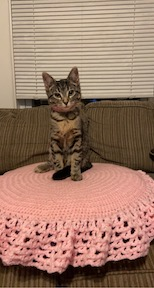

What I did over the break
Professional Development
- I updated my resume to add all the projects I worked on last semester and started applying to entry-level roles.
- I also started developing andorid applications using Android Studio

Hobbies
- I crocheted a bed for my kitty Cleo. It was very rewarding to see her sleep op it but she only used it once :(

- I started rollerblading again, currenlty im elarning how to stop without using my break. I've been following this video